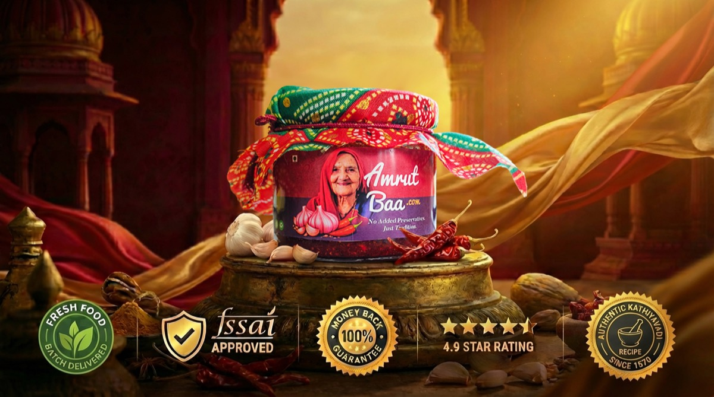

① As a SIDE
Smear it directly onto hot Parathas, Theplas, or toast. Use it as a fiery, ready-to-eat dip for snacks.
There is a reason this "Jadooi" Chutney is taking over kitchens.
Turn any bland meal into a Shahi Dawat in seconds with Amrutbaa’s 450-year-old secret.

⚠️ Note: All orders are prepared strictly as per our weekly batch schedule. No ready stock available. Urgent delivery requests cannot be accommodated at any cost.

Watch why thousands of kitchens are legendary because of just one spoonful.
Watch how just one spoonful of Amrutbaa instantly transforms everyday meals like Rice or Chaat into a royal feast.
Ready to cook like this?
450 Years ago Portuguese sailors brought the first red chilli to India. A kathiyavadi woman amused by its color and heat replaced pippali (long pepper) with red chilli for her garlic chutney. That is how "Red Gold" was accidentally discovered.
Her cooking time became half, and villagers started craving for the powerful punch of taste, aroma, and color. This authentic recipe was worshipped & safeguarded across the generations.
Hansaben Patel, the daughter of Amrutbaa, is going to make a fresh batch of it in --:--:--.
You can reserve a jar for you before registrations close.
See how we handle every jar with the same love that Amrutbaa put into her first batch.
"Opening an Amrutbaa jar is like opening a piece of history."
Amrutbaa adapts to your kitchen rhythm—quietly becoming the obvious first reach in most of your meals for life.

Smear it directly onto hot Parathas, Theplas, or toast. Use it as a fiery, ready-to-eat dip for snacks.

Swirl a spoonful directly into a bowl of plain yellow Dal, Khichdi, or Sabji right before eating to instantly upgrade the color and flavor.

Sizzle one spoon in hot oil to start your cooking. It replaces your chopped garlic, onions, and dry spices so you can cook any Sabji or curry in half the time.
Find your go-to pairing. Secure my jar today.
It has a perfectly balanced bold kick that awakens your tastebuds without overpowering the main dish. The heat comes naturally from premium hand-picked red chillies.
Even with zero preservatives, our natural preparation method gives it a shelf life of up to 2 months when unopened.
We recommend refrigerating after opening to maintain the vibrant color and fresh garlic punch, as we use absolutely no chemical preservatives.
Yes, 100%! Our chutney is purely plant-based, made with just garlic, chillies, spices, rock salt, and cold-pressed oil. No dairy, no gluten, no artificial colors.